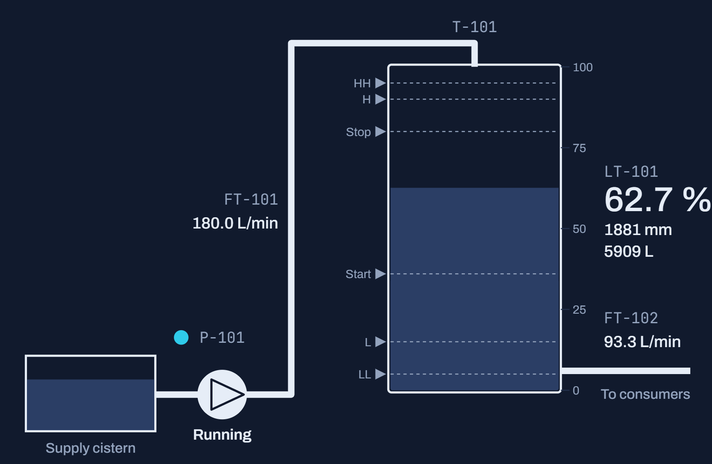

tanksim
A water tank, a fill pump and the PLC program that runs them.

Pump P-101The PLC starts it at the start level and trips it after 5 s without feedback
A water tank, a fill pump and the PLC program that runs them.

Pump P-101The PLC starts it at the start level and trips it after 5 s without feedback